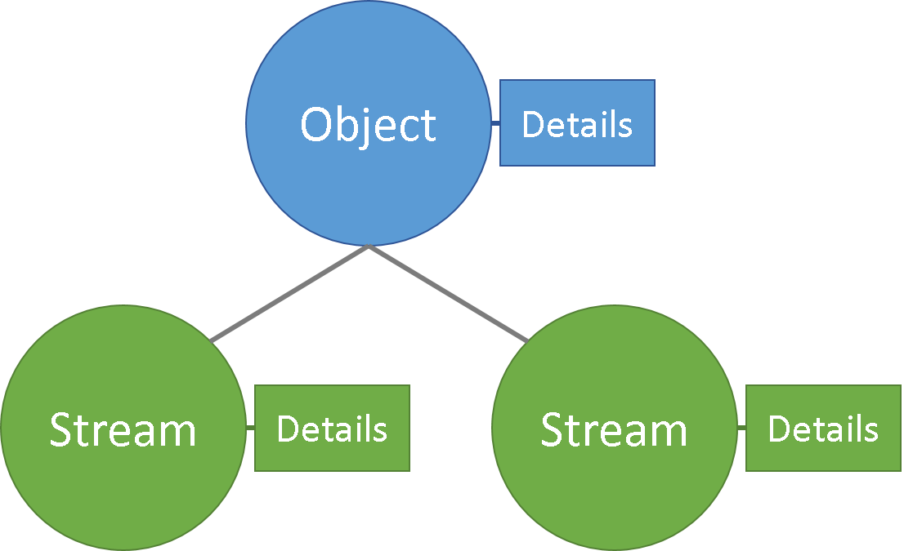
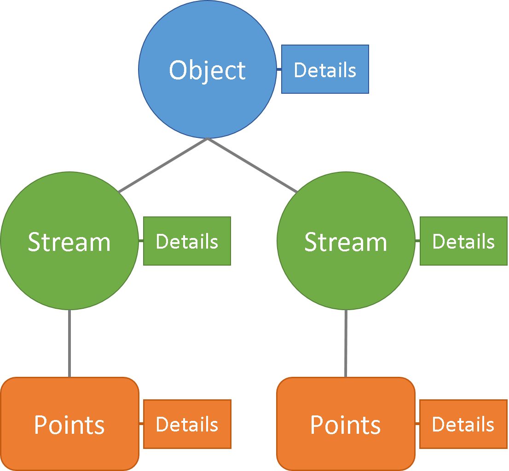
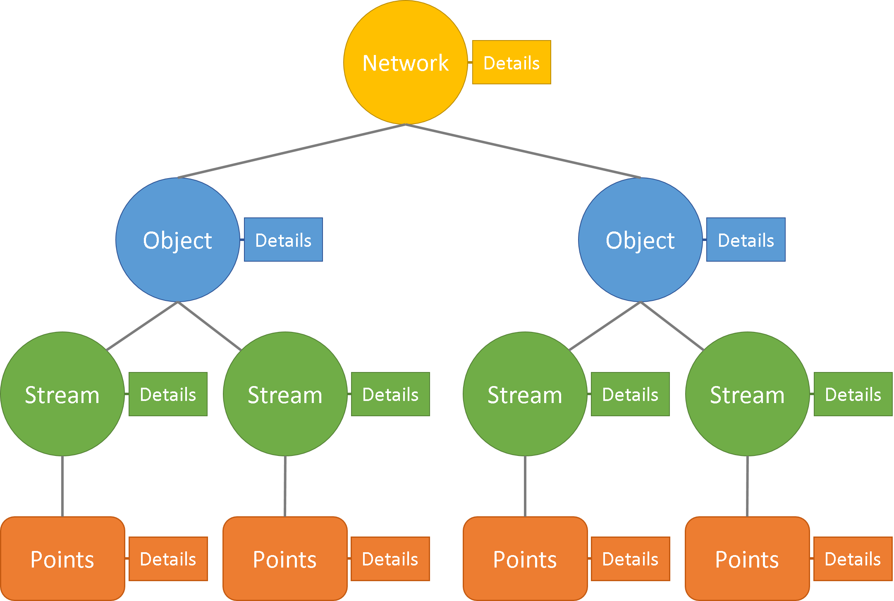
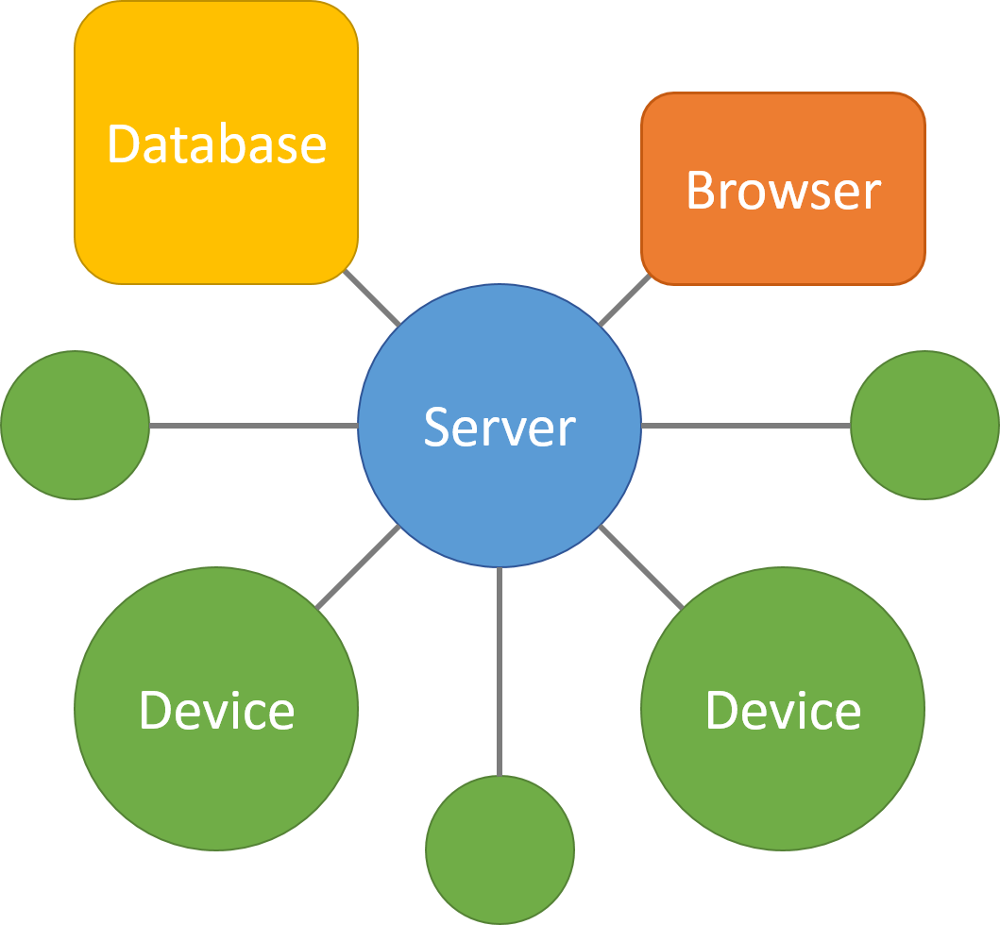

Building the Internet of ThingsLearn - Build - Connect
About
We at Wallflower.cc are working to build the Internet of Things (IoT) by developing intuitive and portable software for collecting, storing, analyzing, and visualizing data from connected devices.
At the core of our platform is the WCC (dub-see-see) data structure, a simple and extensible way of representing IoT devices.
Though we are still in the very early stages of development, we have released Wallflower.Pico, an open-source Python server that enables users to send and retrieve data from a database.
Whether you're a student looking to learn IoT development or a professional wanting to prototype an idea, Wallflower.Pico makes it quick and easy to setup a network of devices.
Wallflower.cc is still in the early stages of development, so if you find a bug or have suggestions, please let us know on GitHub.
The Wallflower.Pico and Wallflower.Nano servers are open-source (AGPL v3) and we encourage users to modify the code and make it their own.
Copyright
The design and contents of this site are copyright by Wallflower.cc.
The Wallflower.Pico and Wallflower.Nano source code is licensed under the AGPL v3. You can find a reference to this license at the top of each source code file.
Components which connect to the servers via the API are not affected by the AGPL. This extends to the Python example code and the HTML, JS, and CSS code of the web interface, which are licensed under the MIT license.
In summary, any modifications to the Wallflower.Pico and Wallflower.Nano source code must be distributed according to the terms of the AGPL v3. Any code that connects to the Wallflower servers via the API is recognized as a seperate work (not a derivative work) irrespective of where it runs. Lastly, you are free to modify the HTML, JS, and CSS code of the web interface without restrictions, though we would appreciate you sharing what you have created.
Data Structure
At the core of our platform is the WCC (dub-see-see) data structure, a simple and extensible way of representing IoT devices. Below, we provide a brief introduction of the WCC data structure.
Objects
Devices (such as a thermostat, a light switch, or a watch) are referred to as objects. In fact, any agent that produces or retrieves data is an object. This means that virtual agents, like web interfaces and smartphone apps, are also objects because they can retrieve data from other objects and produce data in the form of user input.
Information about a particular object, such as a user-friendly name, a device category, or a product description, is collectively referred to as the object details. These details provide the information necessary for other objects to understand and interact with the object.
Streams
Every object is comprised of a number of streams. For example, a thermostat (object) has a setpoint temperature (stream) and turns on and off (stream) a heating system according to a temperature measurement (stream). Essentially, streams describe the data that is sent to and from an object. This includes sensory data as well as user settings and commands.
Just as with objects, information about a particular stream is collectively referred to as the stream details. These details provide the information necessary to understand what the stream represents and how to interact. For example, is the stream physical/virtual, readable/writeable, or private/public.

Points
The actual values of a stream are referred to as the points. The points can include a historical record of all previous values or simply the current value of the stream. The points details provide information directly related to the values being stored, such as the data type (integer, string, etc.) and units (Celsius, hours, etc.).

Network
Lastly, a network is simply a population of objects. Generally, a network will represent all the objects capable of communicating with one another (for example, the WiFi network within a house). The network details includes characteristics of the network.

With the the WCC data structure, we can abstract IoT devices in a way that is simple to understand and easy to extend.
Application Programming Interface
In the WCC (dub-see-see) platform, an API provides a particular implementation of the data structure that enables devices to store and retrieve points in a server. Not all WCC APIs are created equal; some only provide basic functionality with limited communication while others offer a wider range of features.
In this page, we briefly introduce the HTTP API, the simplest WCC API which allows devices to interact with a WCC server through a collection of RESTful web resources. We have designed the HTTP API to be easy to understand and to follow common practices. The HTTP API provides a very basic implementation of the WCC data structure where networks, objects, streams, and points are represented as endpoints and accessed via the URI to which the HTTP request is made. We have elected to favor human readability over effeciency and thus the HTTP API is, in many respects, unnecessarily verbose. Additionally, the API lacks important features such as authorization and minification. Nonetheless, it provides the ideal introduction to the Wallflower.cc platform.
WCC HTTP API
The HTTP API implements the PUT, GET, POST, and DELETE request methods allowing developers to create, read, update, and delete information on a WCC server. Components of the data structure (network, objects, and streams) are identified using unique ids included within the URI. Below, we present the enpoints for reading or viewing the contents of the WCC server using HTTP GET requests. This page is only meant to serve as a quick introduction. The Wallflower.Pico server and dashboard provide an interactive resource for learning and testing the API. Documentation for the HTTP API is still being developed.
Points
We begin with an example of a request to read the points from a stream. In this example, the points represent temperature measurements taken by a thermostat. Within the WCC server, the stream has the id temp-sens and is part of the object thermostat-main within the network local. An example of a request using the HTTP GET method and the JSON response returned by the server are given below.
Request
GET /networks/local/objects/thermostat-main/streams/temp-sens/points
If we want to access the information for a particular stream, we can make an HTTP GET request to the stream's endpoint, as given in the example below. In the HTTP API, data that belongs to the stream (in other words, the points and points-details) will automatically be included in the JSON response.
Request
GET /networks/local/objects/thermostat-main/streams/temp-sens
If we want to access the information for a particular object, we can make an HTTP GET request to the objects's endpoint. All stream and points information will automatically be included in the JSON response. Here we see that the thermostat-main object has 2 streams, temp-sens and temp-set.
The examples above illustrate how to retrieve information from a WCC server using the HTTP API. The requests for creating, updating and deleting networks, objects, streams, and points follow a similar format but employ the HTTP PUT, POST, and DELETE methonds. The Wallflower.Pico server provides an interactive resource for learning and testing the HTTP API.
Server
In the WCC (dub-see-see) platform, a server is a program running on a computer that stores the contents of a WCC network in a database. A server implements one or more of the WCC APIs, allowing other devices to create, read, update, or delete the information on the server.

Wallflower.Pico
Wallflower.Pico is the first server that we have released and provides a simple and easy-to-learn introduction to the WCC platform. The Wallflower.Pico server implements the HTTP API and includes a JS/jQuery web interface. The server is written in Python and the HTTP API is built upon a Flask app. To enable real-time communication, Wallflower.Pico also supports the addition of a WebSocket port using an Autobahn/Twisted server. An SQLite database is employed for storage. We have elected to leave the API exposed in the server, demo, and interface code to enable easy modification and experimentation.
Wallflower.Pico requires Flask, which can be installed with pip
$ pip install Flask
To start the server on your computer, run
$ python wallflower_pico_server.py
Open a web browser and navigate to http://127.0.0.1:5000/ to view the interactive dashboard. By default, the server will also be publically available on your network and accessible via the IP address of your computer (i.e. http://IP_ADDRESS:5000/).
The Wallflower.Pico server is capable of broadcasting changes to the network over a WebSocket port. This allows devices and interfaces to be updated in real-time be receiving all successful responses to create, update, and delete requests. Before enabling the WebSocket funtionality, you will need to install Autobahn|Python, an open-source server for the WebSocket protocol, which can be installed with pip
$ pip install autobahn[twisted]
To start the server with the WebSocket enabled, edit the wallflower_config.json file and change
"enable_ws": false,
to
"enable_ws": true,
Then start the server by running
$ python wallflower_pico_server.py
Note that by enabling the WebSocket port, you will use index_ws.html instead of index.html as the web interface. Additionally, the WebSocket port is not capable of receiving requests and any messages sent to the port will be ignored.
The wallflower_demo.py file includes sample Python code for creating objects and streams and for sending new datapoints. Running the demo code with the WebSocket port enabled will illustrate the capabilities of the interactive dashboard. The wallflower_demo_ws.py file includes sample code for listening to messages broadcast by the WebSocket port using an Autobahn client.
The Wallflower.Pico server is still in beta development, so if you find a bug, please let us know on GitHub.
Wallflower.Nano
Our second server, Wallflower.Nano, is currently in development and will be built upon Crossbar.io, an open-source router for the WAMP protocol. The server will allow devices to subscribe to endpoints and to receive notifications in real-time.